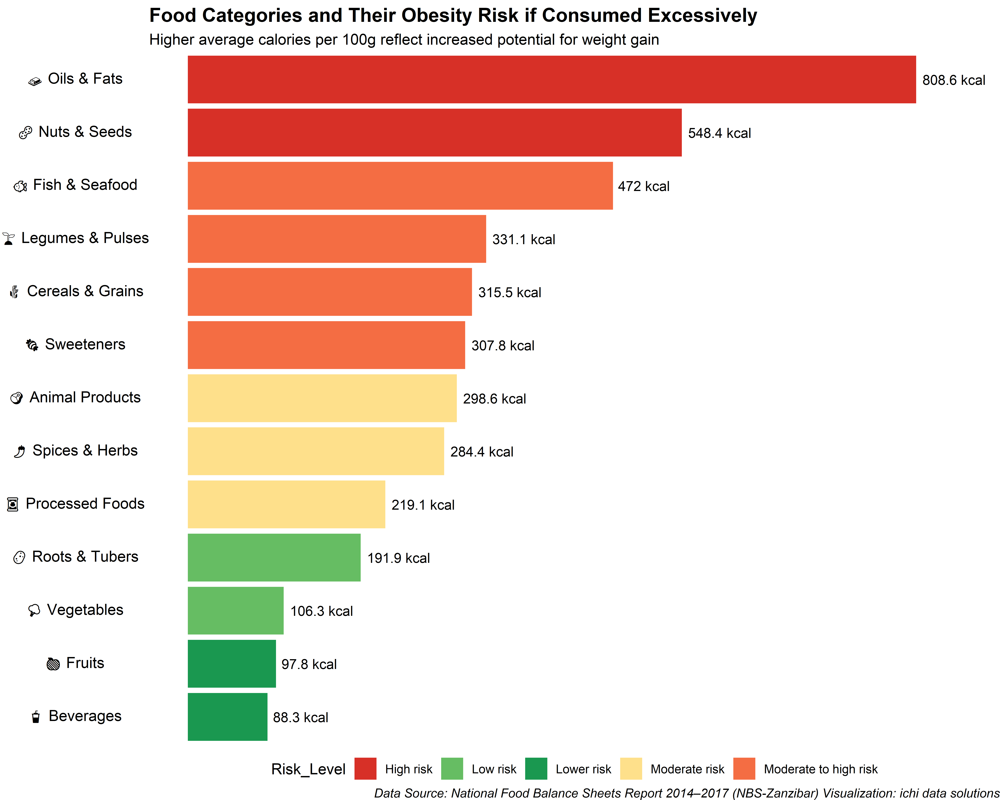

library(tidyverse)── Attaching core tidyverse packages ──────────────────────── tidyverse 2.0.0 ──
✔ dplyr 1.1.4 ✔ readr 2.1.5
✔ forcats 1.0.0 ✔ stringr 1.5.1
✔ ggplot2 3.5.2 ✔ tibble 3.2.1
✔ lubridate 1.9.4 ✔ tidyr 1.3.1
✔ purrr 1.0.4
── Conflicts ────────────────────────────────────────── tidyverse_conflicts() ──
✖ dplyr::filter() masks stats::filter()
✖ dplyr::lag() masks stats::lag()
ℹ Use the conflicted package (<http://conflicted.r-lib.org/>) to force all conflicts to become errorslibrary(readxl)
library(stringr)
library(forcats)
library(ggtext)
library(gt)
library(GGally)Registered S3 method overwritten by 'GGally':
method from
+.gg ggplot2# Load your dataset
ncf <- read_excel("NCF.xlsx")
# Clean column names
colnames(ncf) <- c("SN", "CPC_Code", "Commodity", "Calories", "Protein", "Fats", "Category")
# Ensure data is numeric
ncf <- ncf %>%
mutate(across(c(Calories, Protein, Fats), as.numeric)) %>%
drop_na(Calories, Protein, Fats)
# Remove NA values and check for duplicates
ncf_clean <- ncf %>%
distinct() %>%
drop_na()
# View(ncf_clean)
anyNA(ncf)[1] FALSEanyNA(ncf_clean)[1] FALSE## Categorize Foods into Low, Medium, and High Calorie Classes
# Define custom calorie levels based on your specified thresholds
ncf_clean <- ncf_clean %>%
mutate(Calorie_Level = case_when(
Calories >= 10 & Calories <= 100 ~ "Low",
Calories >= 201 & Calories <= 500 ~ "Medium",
Calories >= 501 & Calories <= 950 ~ "High",
TRUE ~ NA_character_ # For calories outside defined ranges
))
# Summary stats per food category
category_summary <- ncf_clean %>%
group_by(Category) %>%
summarise(
Avg_Calories = mean(Calories, na.rm = TRUE),
Avg_Protein = mean(Protein, na.rm = TRUE),
Avg_Fats = mean(Fats, na.rm = TRUE),
Median_Calories = median(Calories, na.rm = TRUE),
SD_Calories = sd(Calories, na.rm = TRUE),
Count = n()
) %>%
arrange(Avg_Calories)
print(category_summary)# A tibble: 13 × 7
Category Avg_Calories Avg_Protein Avg_Fats Median_Calories SD_Calories Count
<chr> <dbl> <dbl> <dbl> <dbl> <dbl> <int>
1 Beverages 88.3 4.54 0.0385 56 74.8 13
2 Fruits 97.8 1.27 1.64 58 88.3 65
3 Vegetabl… 106. 2.30 6.03 29 213. 35
4 Roots & … 192. 1.92 0.35 110. 127. 18
5 Processe… 219. 5.91 4.92 261 163. 24
6 Spices &… 284. 9.23 9.29 323 102. 9
7 Animal P… 299. 12.2 25.0 170 274. 102
8 Sweetene… 308. 0.153 0.0133 344 110. 15
9 Cereals … 316. 12.4 6.1 344. 152. 62
10 Legumes … 331. 16.8 18.4 340. 242. 30
11 Fish & S… 472 3.15 50.2 472 608. 2
12 Nuts & S… 548. 10.9 51.3 567 239. 53
13 Oils & F… 809. 0.138 91.4 884 158. 8# Create GT table
category_summary %>%
gt() %>%
tab_header(
title = md("**Nutritional Summary by Food Category**"),
subtitle = "Mean, Median and Standard Deviation of Calories, Protein, and Fats"
) %>%
fmt_number(
columns = c(Avg_Calories, Avg_Protein, Avg_Fats, Median_Calories, SD_Calories),
decimals = 1
) %>%
cols_label(
Category = "Food Category",
Avg_Calories = "Avg Calories (kcal)",
Avg_Protein = "Avg Protein (g)",
Avg_Fats = "Avg Fats (g)",
Median_Calories = "Median Calories",
SD_Calories = "SD Calories",
Count = "No. of Foods"
) %>%
tab_source_note(
source_note = md("**Data Source:** National Food Balance Sheets Report (2014–2017), NBS-Zanzibar | Created by: *ichi data solutions*")
) %>%
opt_table_font(font = list(google_font("Open Sans"), default_fonts()))| Nutritional Summary by Food Category | ||||||
|---|---|---|---|---|---|---|
| Mean, Median and Standard Deviation of Calories, Protein, and Fats | ||||||
| Food Category | Avg Calories (kcal) | Avg Protein (g) | Avg Fats (g) | Median Calories | SD Calories | No. of Foods |
| Beverages | 88.3 | 4.5 | 0.0 | 56.0 | 74.8 | 13 |
| Fruits | 97.8 | 1.3 | 1.6 | 58.0 | 88.3 | 65 |
| Vegetables | 106.3 | 2.3 | 6.0 | 29.0 | 212.7 | 35 |
| Roots & Tubers | 191.9 | 1.9 | 0.3 | 109.5 | 127.3 | 18 |
| Processed Foods | 219.1 | 5.9 | 4.9 | 261.0 | 162.8 | 24 |
| Spices & Herbs | 284.4 | 9.2 | 9.3 | 323.0 | 101.8 | 9 |
| Animal Products | 298.6 | 12.2 | 25.0 | 170.0 | 274.4 | 102 |
| Sweeteners | 307.8 | 0.2 | 0.0 | 344.0 | 110.1 | 15 |
| Cereals & Grains | 315.5 | 12.4 | 6.1 | 343.5 | 152.0 | 62 |
| Legumes & Pulses | 331.1 | 16.8 | 18.4 | 339.5 | 241.9 | 30 |
| Fish & Seafood | 472.0 | 3.1 | 50.2 | 472.0 | 608.1 | 2 |
| Nuts & Seeds | 548.4 | 10.9 | 51.3 | 567.0 | 239.0 | 53 |
| Oils & Fats | 808.6 | 0.1 | 91.4 | 884.0 | 157.7 | 8 |
| Data Source: National Food Balance Sheets Report (2014–2017), NBS-Zanzibar | Created by: ichi data solutions | ||||||
# Step 1: Define updated risk classification table with emoji-enhanced categories
risk_metadata <- tribble(
~Category, ~Calorie_Range, ~Risk_Level, ~Notes, ~Label,
"Oils & Fats", "400 – 900+", "High risk", "Very energy dense", "🧈 Oils & Fats",
"Nuts & Seeds", "400 – 700+", "High risk", "Energy dense; often high in fat", "🥜 Nuts & Seeds",
"Fish & Seafood", "50 – 200", "Moderate to high risk", "Lean proteins but watch portion sizes", "🐟 Fish & Seafood",
"Legumes & Pulses", "100 – 300", "Moderate to high risk", "Good protein/fiber balance", "🌱 Legumes & Pulses",
"Cereals & Grains", "100 – 350", "Moderate to high risk", "Carb-rich; portion control", "🌾 Cereals & Grains",
"Sweeteners", "300 – 900+", "Moderate to high risk", "High sugar content", "🍬 Sweeteners",
"Animal Products", "100 – 400+", "Moderate risk", "Watch fatty cuts and dairy fats", "🥩 Animal Products",
"Spices & Herbs", "0 – 300", "Moderate risk", "Salt/spice overload", "🌶️ Spices & Herbs",
"Processed Foods", "300 – 920+", "Moderate risk", "High fat, sugar, processed ingredients", "🥫 Processed Foods",
"Roots & Tubers", "50 – 150", "Low risk", "Starchy but generally safe", "🥔 Roots & Tubers",
"Vegetables", "10 – 100", "Low risk", "Nutrient-dense and safe", "🥦 Vegetables",
"Fruits", "30 – 250", "Lower risk", "Sugary fruits in moderation", "🍎 Fruits",
"Beverages", "0 – 150", "Lower risk", "Mostly low-cal drinks", "🥤 Beverages"
)
# Step 2: Summarize average nutrient content per category
category_summary <- ncf_clean %>%
group_by(Category) %>%
summarise(
Avg_Calories = mean(Calories, na.rm = TRUE),
Avg_Protein = mean(Protein, na.rm = TRUE),
Avg_Fats = mean(Fats, na.rm = TRUE),
.groups = "drop"
) %>%
left_join(risk_metadata, by = "Category")
# Step 3: Plot with emoji-labeled categories
ggplot(category_summary, aes(x = fct_reorder(Label, Avg_Calories), y = Avg_Calories, fill = Risk_Level)) +
geom_bar(stat = "identity") +
geom_text(aes(label = paste0(round(Avg_Calories, 1), " kcal")), hjust = -0.1, size = 3.5) +
coord_flip() +
scale_fill_manual(values = c(
"Lower risk" = "#1a9850", # Dark green
"Low risk" = "#66bd63", # Medium green
"Moderate risk" = "#fee08b", # Yellow
"Moderate to high risk" = "#f46d43", # Orange
"High risk" = "#d73027" # Red
)) +
labs(
title = "Food Categories and Their Obesity Risk if Consumed Excessively",
subtitle = "Higher average calories per 100g reflect increased potential for weight gain",
x = "Food Category",
y = "Average Calories (kcal/100g)",
caption = "Data Source: National Food Balance Sheets Report 2014–2017 (NBS-Zanzibar)\nVisualization: ichi data solutions"
) +
theme_void() +
theme(
axis.text.y = element_markdown(size = 11),
plot.title = element_markdown(face = "bold", size = 14),
plot.subtitle = element_markdown(size = 11),
plot.caption = element_markdown(size = 9, face = "italic"),
legend.position = "bottom"
) +
ylim(0, max(category_summary$Avg_Calories, na.rm = TRUE) + 50)